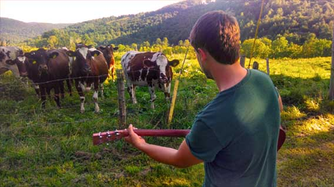

About Me
Hello, my name is Dave Lordan and I am a new transfer student at the university. I have recently graduated from North Shore Community College with an Engineering Science Transfer degree and I am excited to continue my education at UMass Lowell. Earlier in life I attended Berklee College of Music in Boston as a performance major. I have been working as a professional music teacher for the past nine years, giving private and group lessons in guitar, bass, music theory and arrangement. I am in the midst of changing careers from music to computer science. I have always had a love and appreciation of the arts, sciences, technology, and mathematics. I believe programming, particularly front-end development, is a perfect merging of these fields. I am interested in creating products that combine logical design, functionality, and aesthetics.
